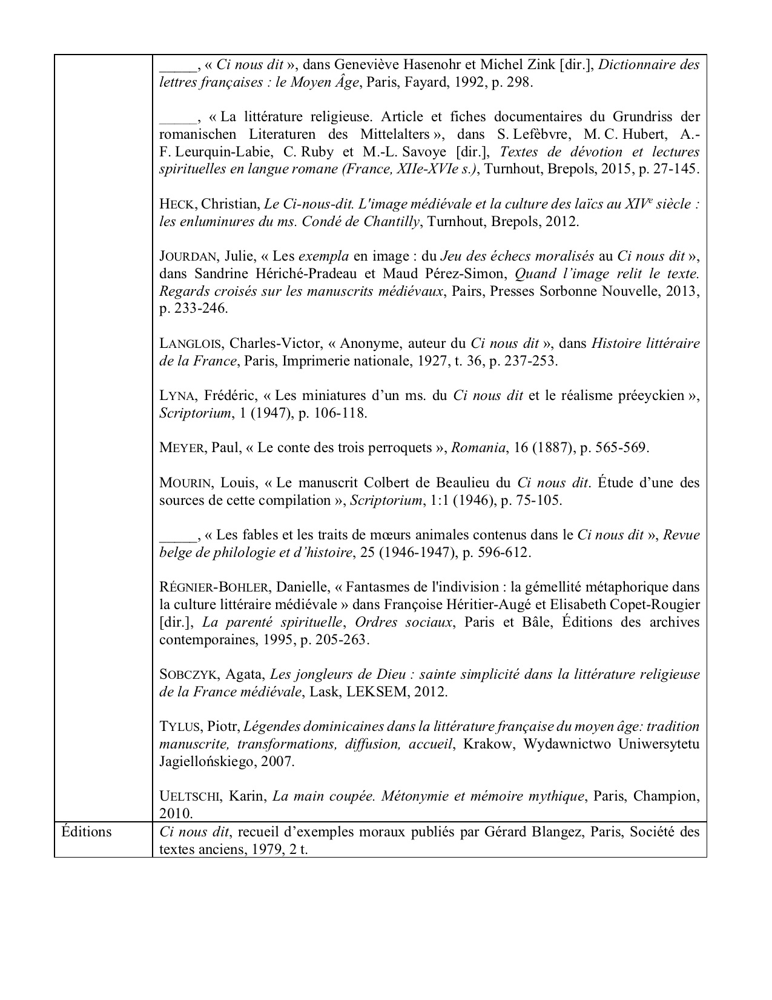
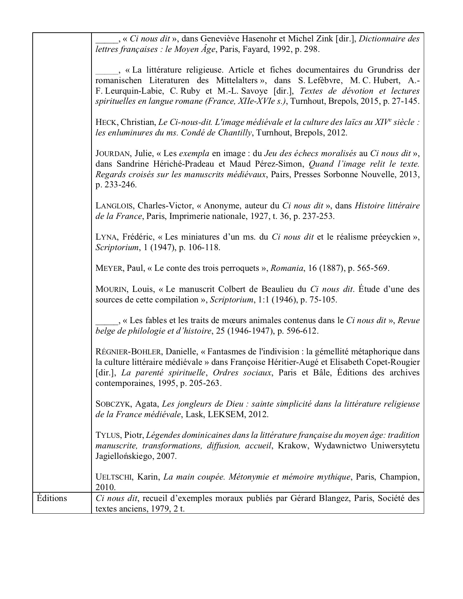
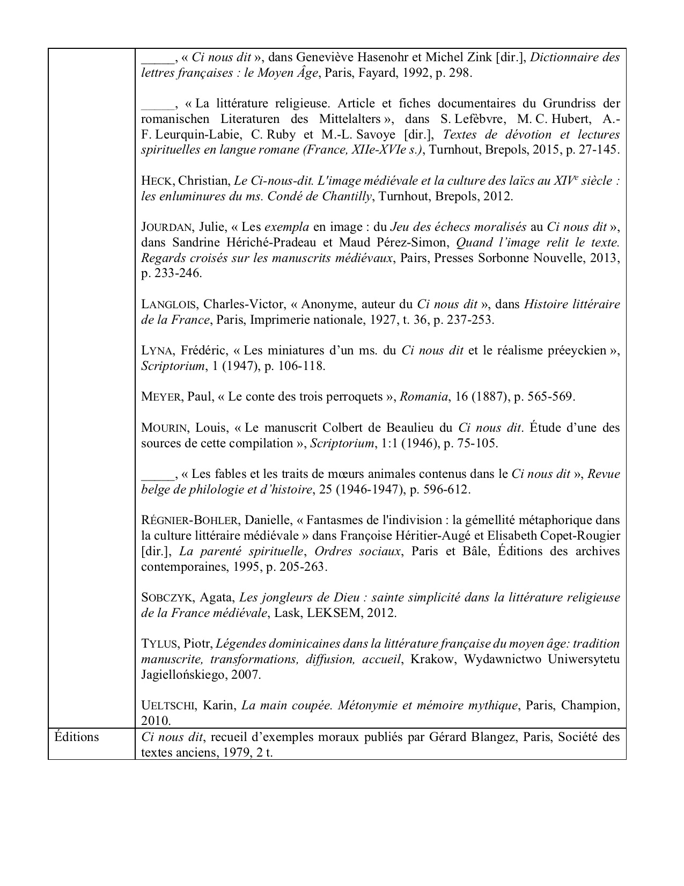

@@include('./fragments/header.html')
 

Ci nous dit
Manuscrits
- Besançon, Bibliothèque municipale, 0257, fol. 209 à 266v
- Bruxelles, KBR, 9017, fol. 1 à 366
- Bruxelles, KBR, 10388, fol. 1 à 403
- Bruxelles, KBR, II 7831, fol. 1 à 181
- Caen, Bibliothèque municipale, 262 ; Paris, BnF, nouv. acq. fr. 10038 ; Paris, BnF, nouv. acq. fr. 11201
- Chantilly, Bibliothèque du Château (Musée Condé), 0026 (1078)
- Chantilly, Bibliothèque du Château (Musée Condé), 0027, (1079)
- Hamburg, Staats- und Universitätsbibliothek, Gall. 001, fol. 193 à 252
- Londres, British Library, Harley 4403
- Oxford, Bodleian Library, Rawlinson D. 659
- Paris, Bibliothèque de l’Arsenal, 2059, fol. 1 à 48
- Paris, BnF, fr. 425
- Paris, BnF, fr. 436, fol. 1 à 113v
- Paris, BnF, fr. 9576, fol. 1 à 16 ?
- Paris, BnF, fr. 17059
- Paris, BnF, fr. 17060
- Paris, BnF, fr. 20110, fol. 1 à 129
- Paris, BnF, fr. 24285, fol. 1 à 186
- Paris, BnF, nouv. acq. fr. 11273
- Paris, Bibliothèque Sainte-Geneviève, 1465
- Reims, Bibliothèque municipale, 614 (F. 435), fol. 1-128
Édition numérisée, accessible en ligne
Aucune édition numérisée
Éléments de description
